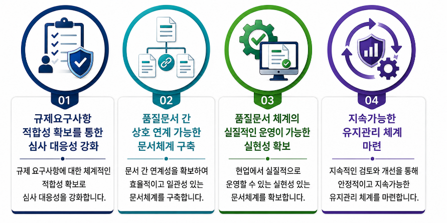
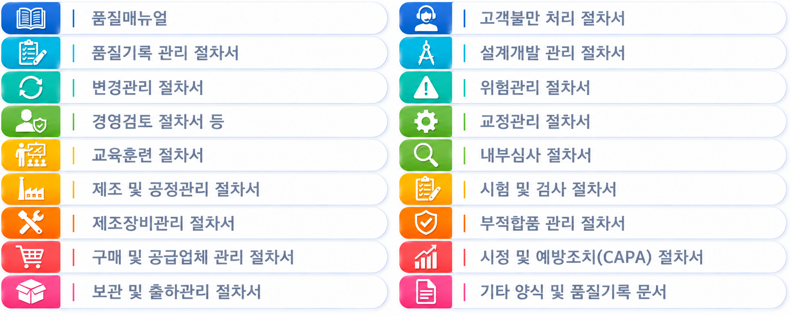

QM·품질문서 등 작성 대행 컨설팅 서비스
QM·품질문서 등 작성 대행 컨설팅 서비스
시그니처 행정사사무소에서는 「국가공인 의료기기 RA전문가 자격」과 「ISO 13485 심사원 자격」 및 「의료기기 업계 실무경험」을 갖춘 행정사, 컨설턴트가 의료기기 및 체외진단 의료기기 기업을 대상으로 「GMP/ISO 13485 인증 심사를 위한 품질경영시스템 (QMS) 구축」, 「품질문서」, 「개발문서(DMR, DHF 등)」, 「기술문서」 등의 『작성 지원 및 대행 컨설팅 서비스』를 제공합니다.
기업의 제품 특성, 제조 공정, 시험·검사 체계, 조직 구조 등을 반영하여, 단순 문서 작성이 아닌, 의료기기 인허가, GMP/ISO 13485 인증심사, 사후관리까지 연계되는 실질적으로 운영 가능한 품질매뉴얼, 절차서, 지침서, 양식 및 기록문서 등 품질문서 관리 체계를 수립하고 작성 대행해드립니다.
당 사무소의 QM·품질문서 등 작성 대행 컨설팅의 강점
- • 심사를 위한 단순한 형식적인 문서 작성이 아니라, 다음의 핵심사항을 궁극적인 목표로 합니다.

- • 컨설팅 세부 업무
- ✓ 의료기기 및 체외진단의료기기 개발·제조 공정 흐름을 반영한 품질문서 체계 설계 및 구축
- ✓ 허가자료, 성능시험, 제조공정, 품질문서 간 연계성 확보
- ✓ GMP/ISO 13485 심사 시 자주 지적되는 문서와 기록 간 불일치, 부조화 사항 사전 점검
- ✓ 기업 규모와 인력 구조에 맞는 실질적인 맞춤형 품질시스템 구축
- ✓ 신규 업체 및 기존 제조업체의 품질문서 고도화 가능
QM·품질문서 등 작성 대행, 이런 기업이 필요합니다!
- • 의료기기 GMP/ISO 13485 심사 대비 품질문서 체계의 준비가 필요한 기업
- • 체외진단의료기기 품질문서 체계를 처음 구축하는 기업
- • 기존 품질문서가 실제 제조·품질관리 등의 업무와 연동되지 않아 조치가 필요한 기업
- • GMP 정기심사 또는 변경심사, ISO 13485 사후심사를 앞두고 품질문서의 점검이 필요한 기업
- • 사내 자체 인력만으로 품질문서 작성과 검토를 병행하여 진행하기 어려운 기업
- • 고객불만, CAPA, 변경관리, 내부심사 운영 체계 등을 개선하고자 하는 기업 등
품질문서 작성 및 문서 고도화 컨설팅
의료기기 업체가 실제 운영 가능한 수준의 품질문서 체계를 갖출 수 있도록 품질매뉴얼, 절차서, 지침서, 양식, 기록문서 등의 신규 작성 및 기존 품질문서 시스템의 개정과 업그레이드를 통한 품질문서 고도화를 지원합니다.

체외진단의료기기 특화형 문서작성 대행 컨설팅
- • 체외진단의료기기 문서작성 대행 컨설팅 개요
- ✓ 당 사무소는 체외진단의료기기 기업을 대상으로 제품 개발, 성능평가, 제조공정, QC 시험, 원재료 관리, 안정성 평가, 변경관리까지 연계되는 품질문서 체계의 구축을 지원합니다.
- ✓ 특히 real-time PCR, 면역진단, 분자진단 제품과 같이 원재료, 제조공정, 성능평가, 보관조건, 검사결과 판정 기준이 중요한 제품군에 대해 개발문서(DMR, DHF 등)와 품질문서가 일관성 있게 연계되도록 컨설팅을 제공합니다.
- ✓ 또한, 체외진단의료기기의 경우 제품의 사용목적, 대상 질환 또는 병원체, 대상 검체, 검사 원리, 대조물질, 판정 알고리즘, 분석적 및 임상적 성능평가 자료가 심사의 핵심이 되는데, 제품 특성에 따라 분석적 성능평가 항목(최소검출한계, 정밀도, 재현성, 분석적 특이도, 교차반응, 간섭물질, inclusivity, exclusivity 등), 임상적 성능평가 항목(임상적 민감도, 임상적 특이도, 양성일치율, 음성일치율 등)을 검토하고, 심사 제출에 적합한 기술문서(성능평가 보고서 등 포함) 작성을 지원합니다.
- • 기술문서 심사를 위한 문서작성 대행
- ✓ 임상시험 계획서: 시험 목적, 검체 수, 시험 방법, 판정 기준, 통계분석 계획 등
- ✓ 분석적 성능평가 문서: 민감도, 특이도, 정밀도(반복성, 재현성), 교차반응, 간섭물질 등
- ✓ 기타 기술문서 작성 관련 문서 등
“품질경영시스템 구축과 품질문서 작성 대행부터 인증 획득까지, 원스톱 컨설팅 서비스!”
“GMP/ISO 13485 QMS와 품질문서 구축, 의료기기 시장경쟁력의 기반입니다!”
지금 바로 상담 신청하세요!